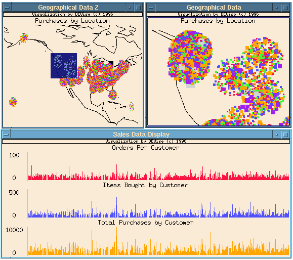

Geographical Information System Example

Input Data
The input data:
- are gathered by a catalog-order company from sales of its products over
a 3-year period (650,000 customers).
- contain attributes: customer number, state where customer lives,
number of orders made by customer, total number of products ordered by
customer, total amount of money spent by customer.
The input file looks like:
1036852,CA,15,40,976
1036872,HI,4,20,840
1037049,CA,5,17,403
1037459,NV,12,38,812.5
1037759,IL,6,25,653
1038606,MN,10,39,945
...
Problem
We visualize the geographical distribution of customers and try to
find a pattern between the location and the total amount of money
spent by customers.
Visualization
Click here to see our model of creating
visualizations.
The visualization is created as follows:
- Define window titled "Geographical Data" showing a geographical
area of interest. Location of customers is shown on top of the US
map. Customer's state code is mapped to the latitude and longitude of
some major city in the state, plus some randomness to create a cloud
for easier separation between customers. The total amount of money
spent by the customers is indicated by size and color of rectangles.
- Duplicate window and title it "Geographical Data 2". This window
shows the global picture, with a colored rectangle indicating the area
displayed in the first window. The rectangle is a visual cursor which
can be moved and resized with the mouse.
- Define window titled "Sales Data Display" showing the total number
of orders, total number of products purchased, and the total amount of
money spent by customer.
- Link the X axes of the views in "Sales Data Display".
- Create record link from "Geographical Data" to "Sales Data
Display".
- Select an area of interest in "Geographical Data" and the
system displays the corresponding data records in "Sales Data
Display".
Observations
- This example illustrates the ability of DEVise to handle
large amounts of data. About 6 MB of memory buffer is used to
visualize 20 MB of data (650,000 customers).
Back to DEVise home page.